- 9 دی 1387
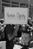
آموخته های ما از کنفرانس AWID
تنظیم : هدی امینیان /عکس : رها عسگری زاده
- 2 دی 1387
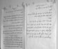
میزگردی با اعضا کمیته آموزش
- 14 آذر 1387
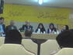
در همایش نقد و بررسی لایحه حمایت از خانواده در دانشکده حقوق دانشگاه آزاد مطرح شد:
گزارش : مریم مالک
- 29 شهریور 1387
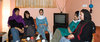
میزگردی با کمیته هنری کمپین یک میلیون امضا در تهران:
تنظیم :آزاده فرامرزی ها
- 14 شهریور 1387
دو سال با کمپین یک میلیون امضا
مریم حسین خواه
- 11 شهریور 1387
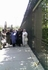
مجلس در تسخیر نمایندگانی از فعالان زن
آیدا سعادت، محبوبه حسین زاده
- 7 شهریور 1387
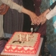
با حضور فعالان کمپین تهران و شهرستان ها :
تغییر برای برابری
- 5 شهریور 1387
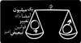
روز شمار کمپین /سال اول
مریم حسین خواه
- 14 مرداد 1387
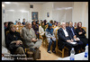
در نشست مطبوعاتی کانون مدافعان حقوق بشر عنوان شد:
آیدا سعادت/ عکس:راحله عسگری زاده
- 22 فروردین 1387
مريم مالک
- 5 فروردین 1387
محبوبه حسین زاده
- 26 اسفند 1386
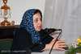
گزارش نشست اعضای کمپین یک میلیون امضا به مناسبت روز جهانی زن
- 18 اسفند 1386
گزارشی از مراسم بزرگداشت هشت مارس در بابل:
محبوبه حسین زاده
- 15 اسفند 1386
گرازشی از نشست تعدادی از اعضای کمپین یک میلیون امضا در تهران:
گزارش: آیدا سعادت، عکس: راحله عسگری زاده
- 13 اسفند 1386
در دانشگاه تهران برگزار شد:
مريم مالك - آيدا سعادت
- 2 اسفند 1386
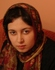
گردآوری: مریم حسین خواه
- 9 بهمن 1386
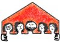
- 30 دی 1386
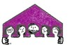
مريم مالک
- 11 دی 1386
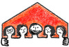
تقدیم به مریم حسین خواه که قرار بود دراین سفر با هم باشیم و در ارائه گزارش نیز.../ محبوبه حسین زاده
- 24 آذر 1386
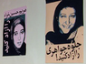
گزارشی از نشست اعتراض آمیز در انجمن صنفی روزنامه نگاران
- 13 آذر 1386
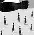
- 25 آبان 1386
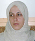
مریم مالک
- 23 مهر 1386
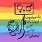
مروری بر نتابج یک پیمایش
گروه پژوهش رسانه کمپین
- 14 مهر 1386

مریم مالک
- 8 مهر 1386
مريم ميرزا
- 31 شهریور 1386
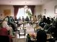
گزارش:مریم مالک،مریم حسین خواه/عکس:راحله عسگری زاده
- 25 شهریور 1386
بازخواني طرح لايحه اي جنجال آفرين
محبوبه حسين زاده
- 21 شهریور 1386
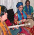
میراقربانی فر/ عکس : راحله عسگری زاده
- 12 شهریور 1386
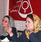
بررسی لایحه حمایت خانواده از منظر حقوقی، جامعه شناسی، روان شناسی
گزارش : محبوبه حسین زاده / عکس راحله عسگری زاده
- 10 شهریور 1386
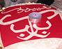
مریم حسین خواه / عکس : راحله عسگری زاده